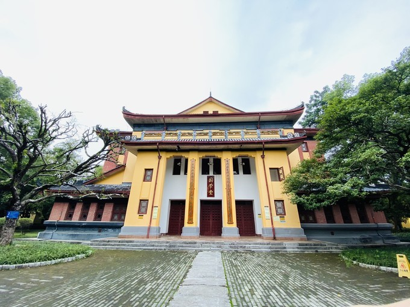

Добро пожаловать в туристическую сеть Гуйлиня~
Добро пожаловать в туристическую сеть Гуйлиня~
издатель:考拉время:2020-12-06 14:13
Когда я приехал в Гуйлинь, я решил в первый день поиграть в городе. Маршрут, который я выбрал: Холм Слоновьего Хобота - Дворец Цзинцзян - Две Реки и Четыре Озера. Холм слоновьего хобота находится в парке Сяншань.Билеты приобретаются группой.Помимо Холма слоновьего хобота, есть еще красивые цветущие деревья.
Много детей залезло на вершину скульптуры слона, чтобы сфотографироваться, я, честно говоря, тоже думал об этом, но... не могу залезть, поэтому просто обнимаю скульптуру слона. После того, как вы покинете холм Слоновий хобот, стартовая цена - дворец Цзинцзян, но... это действительно скучно... это не стоит платы за проезд, билет - это такси, и таксист сказал, что есть билет со скидкой. После проверки , это действительно на 10 юаней дешевле, чем покупать его в Интернете.Я не помню.Если это не так, то два из них около 180, а подробности немного забыты. Как только вы входите в дверь, вы можете следовать за гидами, но вам нужно собрать достаточно людей, чтобы пойти. Не можешь прийти - не приходи, а если надо - не жди инструктора три-пять минут, иначе гулять по парку действительно неинтересно.
Дворец Цзинцзян также является филиалом Педагогического университета Гуанси. Мы не нашли его, когда вошли в дверь. Когда мы вышли, мы обнаружили кого-то, кто вошел через дверь кампуса и сказал: нужно купить билет..
После выхода из дворца Цзинцзян, это Восточная и Западная аллеи. Как следует из названия, Восточная аллея и Западная аллея - это улицы с закусками и специализированными магазинами. Ретро-здания можно рассматривать как резкий контраст с городом.
Chunji Roasted Goose - местная воровская горячая лавка. Я давно стою в очереди, чтобы ее съесть, но я думаю, что жареный гусь вкусный. Остальные так себе, особенно гусиные лапки... клев не плохой .